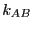
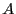
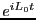

Next: The Transition Path Ensembles
Up: Rare Events: Path-Sampling Monte
Previous: Rare Events: Path-Sampling Monte
Consider a unimolecular isomerization reaction:
 is the forward rate constant for the reaction,
and is the backward rate constant. They are required
to express the concentration balances for species  and  in
the traditional way:
in
the traditional way:
|
 |
|
(247) |
|
|
|
(248) |
At equilibrium, the time derivatives vanish, and
, and
We now ask, how does an initial perturbation in the concentration of ,
written ,
decay with time, assuming = const.?
|
|
|
(250) |
|
|
|
(251) |
We can easily solve this to yield:
which defines the ``decay time'':
(The last equality assumes the concentrations are normalized such that
; that is, we can consider  as the probability of
observing ``state'' .)
as the probability of
observing ``state'' .)
Now we make a connection to the microscopic. Imagine that the two
states labelled and are separated from each other along some
general reaction coordinate  which has a large
free energy barrier at position :
which has a large
free energy barrier at position :
This is a free energy barrier because the system presumably has many
more degrees of freedom other than (which may or may not contribute
to) . Now, we enter the realm of linear response theory (See
Appendix C in F&S), and ask, what is the behavior or the system with
a finitely small, static perturbation toward state ? We
express this as a perturbation Hamiltonian:
where is the reference Hamiltonian of the unperturbed
system. Here, is an indicator function which is 1 if we are in
state and 0 otherwise:
Notice that the peturbation lowers the energy by a little bit
( ) when the system chooses to be in state . Here, we
think of as a switch we can flip in order to perturb the
system. We measure the static pertubation as the difference between
the average concentration of in the perturbed state to that in the
unperturbed state:
) when the system chooses to be in state . Here, we
think of as a switch we can flip in order to perturb the
system. We measure the static pertubation as the difference between
the average concentration of in the perturbed state to that in the
unperturbed state:
Notice that because of our choice in magnitude for , we can
consider its ensemble average,
, to be the
probability of observing the system in state A, which is, due to our
normalization of concentration, equivalent to the concentration of A.
Our first step is to find the linear response of  to
, defined as
to
, defined as
So let us first compute
in the canonical
ensemble:
Here, we have defined as the unnormalized canonical
partition function, merely to make the following gymnastics a little
more transparent. Differentiating with respect to :
Now, we haven't said anything in detail about the structure of ,
but in fact, to perform this analysis, we require that it be
continuous through the origin. But, we can make it vary from 1 to 0
across as narrow a region of around the origin as we like. Then
it is true that, at all values of except perhaps right at the
barrier position ,
This implies
The next step is to introduce a clock that begins ticking the moment
we set . As long as was small, we can
compute the decay of the static perturbation
to first order in
as2
is the Liouville operator, which we first encountered in the
Liouville operator formalism for deriving MD integrators (Sec. 4.1.2), and  is the classical propagator:
 |
(270) |
This yields:
Now, Eq. 266, when integrated implies
which we can use to eliminate in Eq. 272, yielding
Now, recalling Eq. 253, we can make a connection to the macroscopic:
This result states that the decay behavior is governed by the
autocorrelation function of concentration fluctuations.
Eq. 275 is itself a remarkable result of modern
nonequilibrium statistical mechanics, attributable to Onsager.
We have implicitly assumed that the system spends all of its time in
either or ; the system spends virtually no time at the barrier
crossing itself. Eq. 275 is therefore valid as long as the
decay time, , is much greater than the ``barrier crossing
time''; usually, this is true (we assume).
Now, we differentiate Eq. 275 with respect to time:
where
. Note that the 's are gone thanks
to the fact that
.
For time much less than , but still much greater than the
barrier crossing time,
,3
Recalling from way back from Eq. 256 how and the
rate constant are related, we find finally that
So: A rate constant is the time-derivative of a concentration autocorrelation
function.
The idea of path sampling Monte Carlo is that, because is an
ensemble average, we can compute it using MC, if we determine first
what ensemble we need to sample.
Next: The Transition Path Ensembles
Up: Rare Events: Path-Sampling Monte
Previous: Rare Events: Path-Sampling Monte
cfa22@drexel.edu